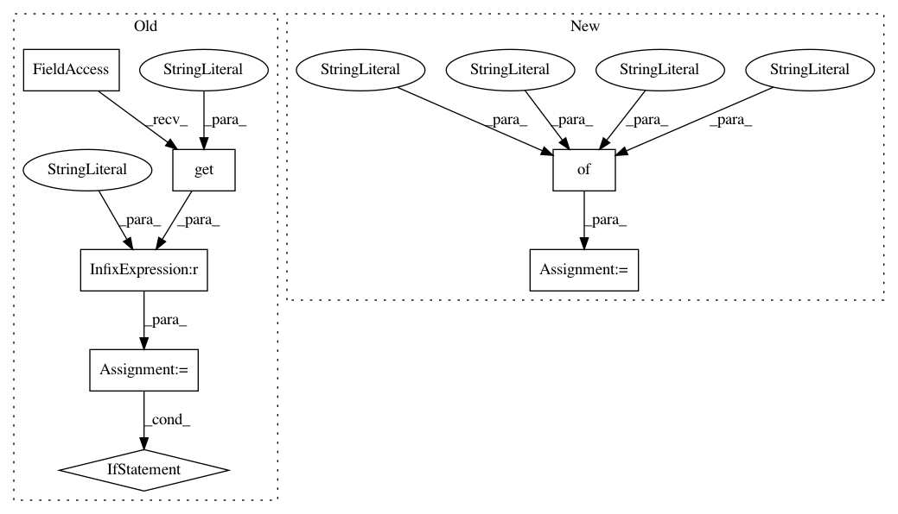

435550e4d9b6385b454ad58daa770d98174f46c7,tslearn/docs/conf.py,,,#,21
Before Change
// If extensions (or modules to document with autodoc) are in another directory,
// add these directories to sys.path here. If the directory is relative to the
// documentation root, use os.path.abspath to make it absolute, like shown here.
on_rtd = os.environ.get("READTHEDOCS") == "True"
if on_rtd:
sys.path.insert(0, os.path.join(os.path.dirname(__file__), "../.."))
else: //locally
sys.path.insert(0, os.path.join(os.path.dirname(__file__), "../.."))
// -- General configuration ------------------------------------------------
// If your documentation needs a minimal Sphinx version, state it here.
//needs_sphinx = "1.0"
// Add any Sphinx extension module names here, as strings. They can be
// extensions coming with Sphinx (named "sphinx.ext.*") or your custom
// ones.
extensions = [
"sphinx.ext.autodoc",
"sphinx.ext.doctest",
"sphinx.ext.coverage",
After Change
autosummary_generate = True
//autodoc_default_flags = ["members", "inherited-members"]
sphinx_gallery_conf = {
"examples_dirs": "./examples",
"gallery_dirs": "./auto_examples",
"reference_url": {"tslearn": None,
"matplotlib": "http://matplotlib.org",
"numpy": "http://docs.scipy.org/doc/numpy-1.9.1"},
"default_thumb_file": "fig/logo.png",
"backreferences_dir": "gen_modules/backreferences",
"doc_module": ("tslearn")
}
// Add any paths that contain templates here, relative to this directory.
templates_path = ["_templates"]
In pattern: SUPERPATTERN
Frequency: 3
Non-data size: 7
Instances
Project Name: rtavenar/tslearn
Commit Name: 435550e4d9b6385b454ad58daa770d98174f46c7
Time: 2017-06-20
Author: romain.tavenard@univ-rennes2.fr
File Name: tslearn/docs/conf.py
Class Name:
Method Name:
Project Name: scikit-multiflow/scikit-multiflow
Commit Name: bbddf0ca76ae600aba7a0156d4230b57fd24a50c
Time: 2019-04-14
Author: jacob.montiel@gmail.com
File Name: docs/conf.py
Class Name:
Method Name:
Project Name: dmlc/gluon-nlp
Commit Name: 5046ad770bf2c5d57ff4ce68f1e2aa8e0f69ce26
Time: 2018-11-22
Author: szha@users.noreply.github.com
File Name: docs/conf.py
Class Name:
Method Name: